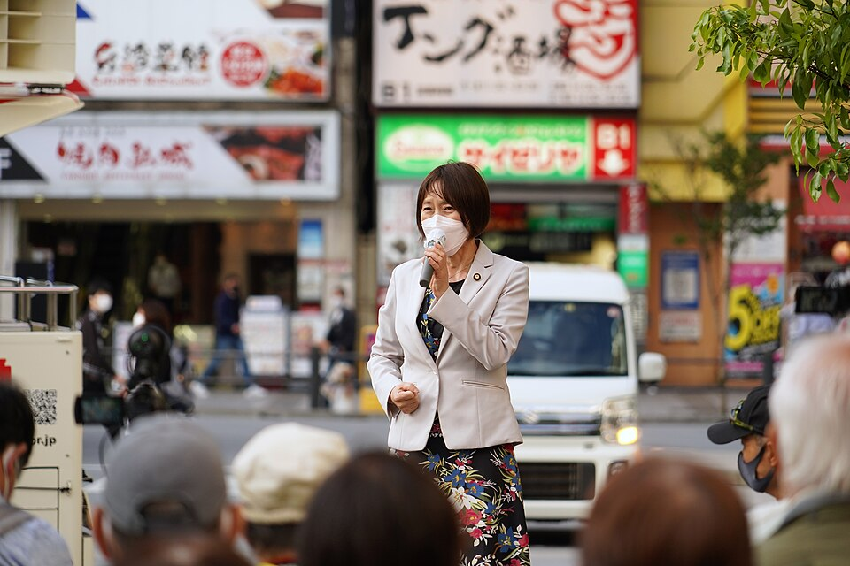
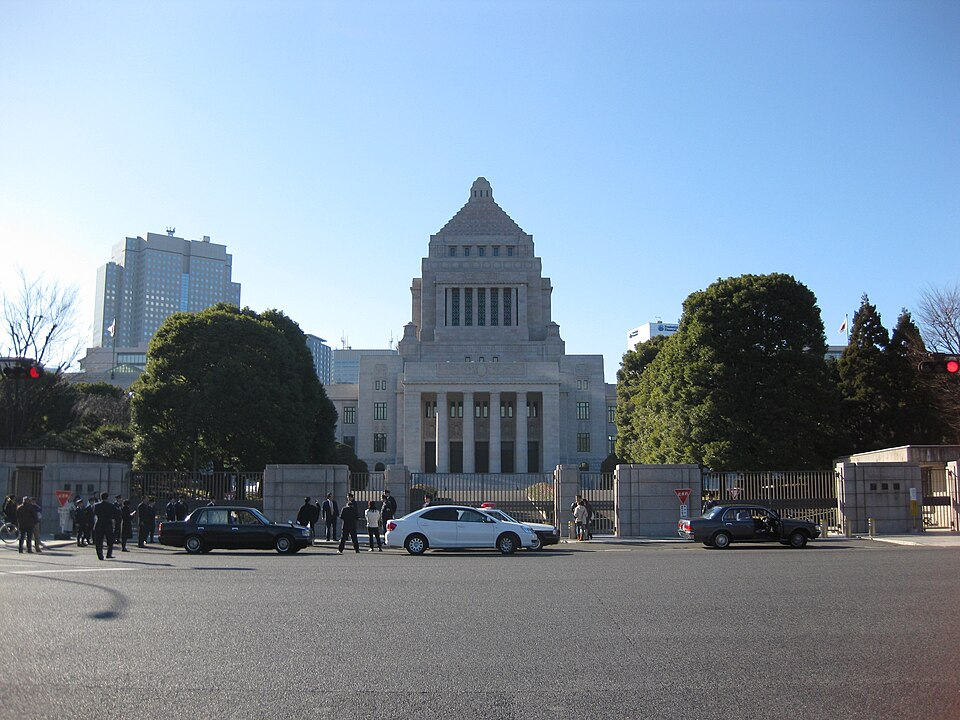

山
山口隆祥
やまぐち・たかよし
会長・代表取締役
役割：販売預託商法を主導した元会長
その後：詐欺罪で懲役8年。控訴審以降の最終結果は未確認2
1975年〜2023年
ジャパンライフは磁気治療器を顧客に販売して預かり、第三者へのレンタル料を原資に年6％程度を配当すると説明した。1
消費者委員会は、商品の実在数が契約数量に比べて著しく不足し、レンタル事業の実態がなく。顧客の購入代金が他の顧客への配当原資になったと整理した。2
2016年12月から2017年12月までに4回の行政処分を受け、2017年12月に銀行取引停止、2023年9月に破産手続が終結した。1

ジャパンライフ株式会社は1975年3月28日に設立され、1980年に家庭用磁気治療器の発売を開始した。2000年頃から、顧客に磁気ベストや磁気バンドなどを販売し、商品を会社に預けてもらい。第三者へのレンタル料から年6％程度を配当する「レンタルオーナー制度」を展開した。商品は顧客の手元に置かれず、会社が預託を受ける形式だった。消費者委員会の報告書は、1個100万円〜600万円の高額商品が販売されたと記載している。1
この説明では、顧客が商品所有権を取得し、会社がレンタル事業を運営して収益を分配することになる。年6％という数字は、購入代金を支払う顧客にとって将来の配当を判断する基準になった。2011年にはサービスステーション61店舗を開設し、2016年3月期の売上高は248億5,360万円だった。会員や預託者の規模が拡大する一方で、契約の裏付けとなる商品在庫とレンタル事業の実態が問われる構造を抱えていた。
ジャパンライフ株式会社（以下「ジャパンライフ社」という。）は、「レンタルオーナー制度」と称し、訪問販売や連鎖販売取引に預託取引を組み合わせた取引形態により、１個 100 万円～600 万円という高額の家庭用永久磁石磁気治療器（以下「商品」という。）を顧客に販売し、商品を顧客の手元に置かずに同社が預かり第三者にレンタルすることで、第三者から得られるレンタル料から年６％程度の配当が供与されるなどと顧客を勧誘し、預託取引を締結していた。
意味：高額商品を販売し、会社が預かってレンタルしレンタル料から配当するという、顧客向けの説明内容を示す。
消費者委員会は、実際に存在する商品の数が契約上存在するはずの数量に比べて著しく不足し、商品を第三者にレンタルする事業の実態もなかったと整理した。顧客から支払われた商品購入代金を原資として、他の顧客への配当が支払われる自転車操業に陥っていたという。これは契約上説明されたレンタル収益と、実際の資金移動が異なるという問題だった。2
2017年7月27日時点の同社資料上の預託者数は6,315人で、同年7月末の同社説明による会員数は6,855人だった。後年の資料では被害者約7,000人、被害額約2,000億円と説明されている。香港支店関係で約2,000人程度の被害者がいるとの説明もあるが、人数や金額の差の内訳は未確認である。
しかし、実際には、商品の数が契約上存在するはずの数量に対して著しく不足しており、商品を第三者にレンタルする事業の実態もなく、顧客から支払われた商品購入代金を原資として、他の顧客への配当が支払われる自転車操業に陥っていた。多数の顧客との間でこうした「販売預託商法」を利用した事業を行っていたジャパンライフ社は、平成 29 年 12 月下旬に経営破綻し、平成 30 年２月９日には、被害弁護団によって破産手続開始申立てが行われた。その結果、契約を締結していた顧客は、ジャパンライフ社に拠出した金銭や預託していたはずの商品の返還が受けられないという事態に陥っている。
意味：公的調査報告が、商品の不足やレンタル事業の不存在と配当原資の実態及び破綻後の返還不能を一続きで認定している。
消費者庁は2016年12月16日、預託法・特定商取引法違反を理由に、預託取引などの一部業務を3か月停止した。2017年3月16日には9か月の一部業務停止命令を出した。行政処分の後も同社は契約形式を変更し、従前と実質的に同じ商品と配当の仕組みを維持したと弁護士会資料は指摘している。1
2017年11月17日には、業務提供誘引販売取引について12か月の一部業務停止命令が出された。消費者庁は、勧誘目的を明示しない行為、重要事項について故意に事実を告げない行為、契約書面の交付義務違反。解約を妨げる行為を問題とした。12月15日には4回目の処分が行われ、既存契約に基づく利益供与の継続や財務状況の不告知も認定された。
消費者庁は、平成 28 年 12 月から平成 29 年 12 月にかけて、ジャパンライフ社に対し、預託法、及び特定商取引に関する法律（昭和 51 年法律第 57 号。以下「特定商取引法」という。）に基づき、計４回にわたる行政処分を行っている。その経過、内容等は、以下のとおりである。 １ 平成 28 年 12 月 16 日 ① 業務停止命令３か月（預託等取引契約に関する業務の一部（勧誘、申込受付及び契約締結）） ２ 平成 29 年３月 16 日 ① 業務停止命令９か月（預託等取引契約に関する業務の一部（勧誘、申込受付及び契約締結）） ３ 平成 29 年 11 月 17 日 ① 業務停止命令 12 か月（業務提供誘引販売取引に係る取引の一部（新規勧誘、申込受付及び契約締結）） ４ 平成 29 年 12 月 15 日 ① 業務停止命令 12 か月（預託等取引契約に関する業務の一部（新規勧誘、申込受付及び契約締結））
意味：行政処分が単発ではなく、約1年間に4回繰り返されたことを示す。
2017年3月期の会社提示決算書では負債が134億円だった。しかし、消費者庁の要請で外部公認会計士が確認した後、磁気治療器などの仕訳不備が指摘され。修正後の負債総額は約2,405億円とされた。12月12日には本社ビルが売却され、12月15日には山口ひろみ社長が代表取締役を辞任した。誰が財務状況を把握し、どの時点で顧客に伝えたかが、行政処分の重要な論点になった。
消費者庁の12月15日資料は、大幅な債務超過を確認した後も、同社が重要な財務状況を告げず。解約の意思表示をした相手に撤回を迫る行為をしていたと認定した。同月26日、銀行取引停止処分により会社は事実上破綻した。年末には国民生活センターが専用ダイヤルを設け、契約者から相談を受けた。
（２）同社は、同社の過去の決算整理仕訳のうち、根拠を示すことができない仕訳を取り消した結果、大幅な債務超過となったことについて、平成２９年７月に公認会計士から同社取締役会宛てにその旨を確認したこと等の報告がなされた後も、平成２９年８月以降、その連鎖販売業に係る商品の販売のあっせんを店舗その他これに類する設備（以下「店舗等」といいます。）によらないで行う個人を相手方として、本件連鎖販売取引についての契約を締結するに際し、その連鎖販売業に関する事項であって、連鎖販売取引の相手方の判断に影響を及ぼすこととなる重要なものに該当する、同社の正確な財務状況、なかんずく同社が大幅な債務超過である事実につき、故意に事実を告げない行為をしていました。 （４）同社は、平成２９年３月１６日以降、その連鎖販売業に係る商品の販売のあっせんを店舗等によらないで行う個人を相手方として、その連鎖販売業に係る本件連鎖販売契約について、解除の意思表示をした相手方に対し、上位職の者を含む複数の従業員との店舗での面接を事実上強い、その意思表示の撤回を執ように迫るなど、迷惑を覚えさせるような仕方で解除を妨げる行為をしていました。
意味：経営悪化を把握した後も、債務超過を告げず、解約希望者に撤回を迫ったと認定している。
山口隆祥は会長・代表取締役、山口ひろみはその娘で社長・代表取締役だった。2017年12月15日に山口ひろみが代表取締役を辞任した後も、旧経営陣の刑事責任が捜査対象となった。2020年9月には元会長ら旧経営陣14人が逮捕され、元会長と元社長らの刑事責任が分けて審理された。個々の元役員の役割と相互の確執は、今回確認した資料では未確認である。
2015年2月、山口隆祥元会長に「桜を見る会」招待状が送付されたことが国会で問題になった。招待状や安倍晋三首相の写真が説明会・宣伝に使われたと大門実紀史議員が指摘したが、違法な便宜供与や安倍晋三本人の犯罪関与の認定は未確認である。消費者庁長官は2019年12月、招待状の宣伝利用を行政調査で把握しておらず、報道を通じて最近知ったと説明した。
問 朝日新聞の兼田です。ジャパンライフの関連で教えてください。招待状がジャパンライフのセミナーなどの場で利用されていたということを、消費者庁が確認できたのはいつでしょうか。 答 平成28年7月時点で、山口会長が花見について言及されていたということは承知しております。なお、招待状を使って宣伝されていたかどうかについては、私どもとしては把握しておりません。 問 花見について言及というのは、「桜を見る会」のことでしょうか。 答 「桜を見る会」とは、実は言われていません。私どもがいろいろとヒアリングする中において、会長が花見の話をされていたというお話があったということでして、「桜を見る会」の招待状がどうだとかいう話は明示的には出てきておりません。 問 招待状については、承知していなかったっていうことでしょうか。 答 そうです。 （中略） なお、今申し上げたとおり、いつ消費者庁が、ジャパンライフ社が「桜を見る会」の招待状を使って宣伝していたのかを知っていたかということにつきましては、私どもも最近知ったということであります。 問 報道を通じて知ったということですね。 答 はい。
意味：消費者庁長官が、招待状の宣伝利用を行政調査で把握していたかについて、報道で最近知ったと説明した。
2018年1月、全国ジャパンライフ被害弁護団連絡会が発足し、2月9日に債権者が東京地裁へ破産手続開始を申し立てた。3月1日、東京地裁は会社の破産手続開始を決定した。山口隆祥元会長は同年9月、山口ひろみ元社長は10月、元取締役2人は2020年2月に破産手続開始となった。弁護団は債権者の申立てと債権届出を支援し、破産管財人は財産換価と債権調査を担った。
刑事裁判では、2021年4月13日に元取締役へ懲役2年・執行猶予3年、元課長代理へ懲役1年6か月・執行猶予3年の判決が出た。2021年12月20日には山口ひろみ元社長に懲役2年6か月・執行猶予5年・罰金200万円、2022年1月28日には山口隆祥元会長に懲役8年の実刑判決が言い渡された。元会長の控訴審・上告審の最終結果は未確認である。
同社は、平成２８年１２月１６日付け及び平成２９年３月１６日付けの行政処分において、預託法第２条第２項に規定する預託等取引業者（以下「預託等取引業者」といいます。）に該当すると認定され、預託法第２条第１項に規定する預託等取引契約（以下「預託等取引契約」といいます。）に関する業務の一部を停止すること等を命じられたが、現在においても平成２８年１２月１６日より前に締結した預託等取引契約に基づき本件商品の預託を受け、預託者に対し当該預託に関する財産上の利益の供与を継続していました。 （１）平成２９年３月１６日付けの行政処分において、同社は、貸借対照表上の負債額の過少計上等の備置き書類の虚偽記載等の違反行為を認定され、同社の計算書類及びその附属明細書（以下「計算書類等」といいます。）
意味：新規勧誘停止後も既存契約を継続し、同時に財務書類の虚偽記載が問題となったことを示す。
破産手続では約7,000人の債権者が約1,614億円を届け出たと整理されている。後年の資料・報道には約8,000人、普通破産債権1,500億円超という説明もある。集計時点や債権区分の違いが考えられるが、完全な差異の内訳は未確認である。2023年9月、東京地裁は破産手続終結を決定した。
最終配当率は1.203％だった。被害額約2,000億円と比較すると、債権者への回復は限定的だった。2023年5月には名古屋地裁が元取締役ら7人と代理店1社に対し、被害者23人への約2億2,500万円の損害賠償を命じたとの報道があるが、判決全文は今回取得できなかった。破産終結後も、元会長の控訴審・上告審の最終結果は未確認である。破産財団からの配当額と刑事裁判の量刑は別の手続で決まり、被害者が受け取った金額を刑事判決だけから算定することはできない。破産手続で確定した配当率は、契約時に説明された年6％の配当率とは異なる。両者は算定の基礎と手続が異なるため、同じ数値として扱うことはできない。
行政処分は勧誘や契約の継続を対象にし、刑事裁判は個人の詐欺・出資法違反を対象にした。破産手続は会社財産を換価して債権者へ配当する手続であり、同じ事件でも確認する記録と判断の範囲は異なる。


| 旧ジャパンライフ本社 | 東京都千代田区西神田2-8-5 | 行政処分資料に記載された本社所在地。本社ビルは2017年12月12日に売却 | 13 |
| 消費者庁 | 東京都千代田区霞が関3-1-1 | 行政処分を実施した機関 | 18 |
| 東京地方裁判所 | 東京都千代田区霞が関1-1-4 | 破産開始・刑事判決・破産終結の裁判所 | 19 |
| 国会議事堂 | 東京都千代田区永田町1-7-1 | 桜を見る会招待状・行政対応が国会で審議された場所 | 20 |
| 内閣府庁舎 | 東京都千代田区永田町1-6-1 | 桜を見る会の招待者管理・政府答弁の関係機関 | 21 |
| 霞が関ビル | 東京都千代田区霞が関3-2-5 | 破産管財人の所在地として報道資料に記載された地域周辺 | 22 |
| 首相官邸 | 東京都千代田区永田町2-3-1 | 招待状の宛名となった内閣総理大臣の公邸・官邸 | 23 |
| 香港 | 香港 | 香港支店関係で約2,000人程度の被害者がいると消費者委員会で説明 | 10 |
顧客に商品を販売して預かり、第三者へのレンタル料から配当すると説明したが、消費者委員会は商品の不足とレンタル事業の実態の不存在を整理し。新規顧客の購入代金が既存顧客への配当原資になったと記載した。242
やまぐち・たかよし
会長・代表取締役
役割：販売預託商法を主導した元会長
その後：詐欺罪で懲役8年。控訴審以降の最終結果は未確認2
やまぐち・ひろみ
社長・代表取締役
役割：山口隆祥の娘。会社の代表取締役を務めた
その後：出資法違反で懲役2年6か月・執行猶予5年・罰金200万円2
あべ・しんぞう
内閣総理大臣
役割：桜を見る会招待状をめぐる政治的・行政的説明責任の対象
その後：犯罪関与の認定は未確認3
あべ・あきえ
内閣総理大臣夫人
役割：山口元会長との面識の有無が国会で質問された
その後：具体的関係は未確認23
たむら・ともこ
参議院議員
役割：招待区分60と招待状問題を追及
その後：国会で説明責任を追及25
だいもん・みきし
参議院議員
役割：被害拡大と招待状利用の関係を指摘
その後：国会で行政対応を追及3
いとう・あきこ
消費者庁長官
役割：招待状利用と内部文書について会見で説明
その後：行政調査の把握時期を説明26
えとう・せいいち
内閣府特命担当大臣
役割：桜を見る会招待問題の政府説明の対象
その後：会見・国会で説明4
いしとや・ゆたか
弁護士
役割：全国被害弁護団連絡会の代表として救済活動
その後：破産申立て・債権届出を支援27
たかまつ・かおる
保全管理人・破産管財人
役割：破産財団の調査・換価を担当
その後：債権調査を担当28
もととりしまりやく・ふたり
取締役
役割：旧経営陣として刑事・破産手続の対象
その後：2021年に一部有罪判決。2020年に破産開始2
もとかちょうだいり
ジャパンライフ元幹部
役割：出資法違反事件の被告
その後：懲役1年6か月・執行猶予3年2
行政機関
役割：2016年12月から2017年12月まで4回の行政処分
その後：販売預託を原則禁止する制度改正を担当1
裁判所
役割：破産開始・刑事判決・破産終結を扱った
その後：2023年9月に破産手続終結を決定19
商品購入者・預託者
役割：商品購入代金を支払い配当を受ける契約を結んだ
その後：約1.203％の最終配当17
連鎖販売の参加者
役割：勧誘と販売報酬のネットワークを担った
その後：個々の受益額は未確認9
相関図は、家族を中心とする経営、顧客と販売員の資金・勧誘関係、行政処分と刑事・破産手続。国会で追及された招待状問題を分けて示す。闇の人脈に関する線は、資料の表現に合わせて指摘・報道・未確認を区別する。
姻戚・血縁／上司と部下。山口ひろみは山口隆祥の娘で、事件当時は社長・代表取締役だった。2017年12月15日に代表取締役を辞任し、後に出資法違反で有罪判決を受けた。https://www.cao.go.jp/consumer/kabusoshiki/torihiki_rule/doc/039_220810_shiryou1.pdf2
資金の出し手と受け手。顧客から商品購入代金を受け取り、商品を預かり、年6％の配当を約束した。実際の配当原資は新規顧客の購入代金が中心だった。https://www.cao.go.jp/consumer/kabusoshiki/torihiki_rule/doc/039_220810_shiryou1.pdf2
庇護・口利きの疑惑。2015年の「桜を見る会」招待状をめぐり、山口元会長が首相枠で招待されたのか、招待状を営業に利用したのかが国会で争点になった。政治的便宜・違法な口利きの認定は未確認。https://kokkai.ndl.go.jp/simple/detail?minId=120015328X00520191129&spkNum=113
接点の有無。国会で安倍首相・昭恵夫人との面識が質問された。面識の具体的内容は未確認。https://kokkai.ndl.go.jp/simple/detail?minId=120015254X0092019120223
対立・追及。田村議員は招待区分60が首相推薦枠を示す可能性を問題にし、政府の名簿廃棄・説明責任を追及した。https://www.shugiin.go.jp/internet/itdb_kaigiroku.nsf/html/kaigiroku/001820120200212011.htm25
対立・追及。大門議員は招待状が説明会・宣伝に使われ、被害拡大に影響した可能性を国会で指摘した。https://kokkai.ndl.go.jp/simple/detail?minId=120015328X00520191129&spkNum=113
対立・確執。消費者庁は2016年12月から2017年12月まで4回の行政処分を行った。https://www.cao.go.jp/consumer/kabusoshiki/torihiki_rule/doc/039_220810_shiryou1.pdf2
対立・確執。山口ひろみが社長を務める会社に対して、複数回の行政処分が行われた。https://www.no-trouble.caa.go.jp/pdf/20171215ac01.pdf13
刑事責任追及。東京地裁は2022年1月、詐欺罪で懲役8年を言い渡した。https://www.cao.go.jp/consumer/kabusoshiki/torihiki_rule/doc/039_220810_shiryou1.pdf2
刑事責任追及。東京地裁は2021年12月、出資法違反で懲役2年6か月・執行猶予5年・罰金200万円を言い渡した。https://www.cao.go.jp/consumer/kabusoshiki/torihiki_rule/doc/039_220810_shiryou1.pdf2
資金の出し手と受け手の救済者。石戸谷弁護士らは被害弁護団を結成し、破産申立て・債権届出を支援した。https://n-seikei.jp/2018/02/japanlife-tousan.html27
破産管財人と債権者。破産管財人として財産換価・債権調査を担った。https://www.tdb.co.jp/report/bankruptcy/flash/4437/28
上司と部下。長官として、内部文書の真偽や行政調査の扱いについて説明した。https://www.caa.go.jp/notice/statement/ito/018322.html29
対立・追及。国会で桜を見る会招待をめぐる政府答弁の対象となった。https://www.shugiin.go.jp/internet/itdb_kaigiroku.nsf/html/kaigiroku/019720020191126004.htm30
上司と部下。旧経営陣14人が逮捕され、元会長と元社長らの刑事責任が分離して審理された。個々の役割・確執は未確認。https://www.cao.go.jp/consumer/kabusoshiki/torihiki_rule/doc/039_220810_shiryou1.pdf2
○大門実紀史君 大門です。法案の審議に入る前に、こういう情勢でございますので、また、こういう日でございますので、ジャパンライフをめぐってまた新しい事実も判明してまいりましたので、この委員会の所管事項でもありますので、まず取り上げたいというふうに思います。 御存じのとおり、ジャパンライフというのは被害者が七千人、被害規模が二千億でございますから、例の豊田商事事件と同じ規模の大事件だということですね。 この委員会でも何度も取り上げてまいりましたが、この間、連日テレビでも何度も放映していただいていますが、桜を見る会にジャパンライフの山口会長が、元会長が招待された招待状、そこに安倍総理の写真が入っている例の宣伝チラシですね、もう委員会でも何度も配られていますけれども、それが、あれは単なる宣伝チラシで使うときもあれば、一千人規模でお年寄りとか集めた説明会でスライドで出して、私は総理に呼ばれるような人間ですよというふうに使われてきたものでございまして、安倍総理がジャパンライフの広告塔、お年寄りをだます手段に使われたというような問題で、大問題でございますけれど。
意味：招待状が顧客向け説明会や信用付けに使われたという、国会での追及側の具体的な説明である。
公的資料で確認できるのは、招待状の宣伝利用や招待区分をめぐる国会での指摘である。暴力団との資金供与、総会屋との関係、仕手筋による株価操作。処分妨害の公的認定は今回確認できない。
安倍晋三、山口隆祥 指摘
内閣府、安倍晋三 確認できない
不特定の反社会的勢力 指摘
暴力団組織 疑惑
総会屋 疑惑
仕手筋・証券会社 疑惑
香港支店・海外関係者 確認できない
消費者庁・政府関係者 確認できない
○大門実紀史君 実は、この七月三十一日の対処方針を決めた会議にもう一つ文書が配られました。それは、要回収、後で回収しますよという文書です。本件の特異性、特別に異常、特異性という文書で、いろいろ書いてありまして、要するに、立入検査はいいと、召喚だと、呼んで注意するだけでいいということと、最後に米印で、政治的背景による余波を懸念すると、政治的な背景による余波を懸念というのがあるんですね。 これ、どういう意味なのか。私は知っておりますけど、後で確認してくれますか、今、文書分からなければ。何か分かりますか。 ○政府参考人（小林渉君） お答えいたします。ただいまの委員の御指摘の点でございますけれども、私も、今その内部の資料というのは持っておりませんので、何をもってそういう方針転換があったというような、委員の指摘の事実があったかどうかということについても、申し訳ありません、今承知しておりません。
意味：政治的背景を懸念した内部文書の存在を議員が追及し、政府参考人はその場で確認できないと答えた場面である。
| 山口隆祥・旧経営陣 | 0年 | 8年 | 山口隆祥元会長の懲役8年。個人が得た総額は未確認 | 2 |
| 初期契約者 | 0円 | 0円 | 後続契約者の資金を原資とする配当を受けた可能性があるが個別受益額は未確認 | 2 |
| 後期契約者・債権者 | 1.203％・億円 | 2000％・億円 | 約2,000億円規模の被害に対し最終配当率1.203％ | 17 |
| 従業員 | 0億円 | 6.7億円 | 労働債権約6億7,000万円が問題となったとされる | 17 |
| 国・地方自治体 | 0円 | 0円 | 未納税・公租公課が発生したが公的資金による補填は確認できない | 17 |
| 被害弁護団・消費者行政 | 0件 | 0件 | 破産申立て、債権調査、制度改正の負担 | 31 |
| 東京地裁 | 2022-01-28 | 懲役8年 |
詐欺罪・顧客20人から計約1億6,500万円。控訴審・上告審の最終結果は未確認2
| 東京地裁 | 2021-12-20 | 懲役2年6か月・執行猶予5年・罰金200万円 |
出資法違反。確定と内閣府資料は整理2
| 東京地裁 | 2021-04-13 | 懲役2年・執行猶予3年 |
出資法違反。有罪2
| 東京地裁 | 2021-04-13 | 懲役1年6か月・執行猶予3年 |
出資法違反。有罪2
| 東京地裁 | 2021年以降 | 執行猶予付き有罪判決が確定したと整理されているが個別量刑は未確認 |
出資法違反。個別一覧は未確認2
| 消費者庁 | 2016-12-16 | 一部業務停止3か月 |
預託法・特定商取引法違反。処分8
| 消費者庁 | 2017-03-16 | 一部業務停止9か月 |
預託法・特定商取引法違反。処分9
| 消費者庁 | 2017-11-17 | 業務提供誘引販売取引の一部停止12か月 |
特定商取引法違反。処分12
| 消費者庁 | 2017-12-15 | 4回目の処分・一部業務停止12か月 |
預託法・特定商取引法違反。処分13
| 東京地裁 | 2018-03-01 | 破産手続開始決定 |
| 東京地裁 | 2023-09-04 | 破産手続終結・最終配当率1.203％ |
破産手続。終結17
| 名古屋地裁 | 2023-05 | 約2億2,500万円の損害賠償を命じたとの報道 |
被害者23人への損害賠償。判決全文は未確認17
ジャパンライフ株式会社（以下「ジャパンライフ社」という。）は、「レンタルオーナー制度」と称し、訪問販売や連鎖販売取引に預託取引を組み合わせた取引形態により、１個 100 万円～600 万円という高額の家庭用永久磁石磁気治療器（以下「商品」という。）を顧客に販売し、商品を顧客の手元に置かずに同社が預かり第三者にレンタルすることで、第三者から得られるレンタル料から年６％程度の配当が供与されるなどと顧客を勧誘し、預託取引を締結していた。
意味：高額商品を販売し、会社が預かってレンタルしレンタル料から配当するという、顧客向けの説明内容を示す。
しかし、実際には、商品の数が契約上存在するはずの数量に対して著しく不足しており、商品を第三者にレンタルする事業の実態もなく、顧客から支払われた商品購入代金を原資として、他の顧客への配当が支払われる自転車操業に陥っていた。多数の顧客との間でこうした「販売預託商法」を利用した事業を行っていたジャパンライフ社は、平成 29 年 12 月下旬に経営破綻し、平成 30 年２月９日には、被害弁護団によって破産手続開始申立てが行われた。その結果、契約を締結していた顧客は、ジャパンライフ社に拠出した金銭や預託していたはずの商品の返還が受けられないという事態に陥っている。
意味：公的調査報告が、商品の不足やレンタル事業の不存在と配当原資の実態及び破綻後の返還不能を一続きで認定している。
消費者庁は、平成 28 年 12 月から平成 29 年 12 月にかけて、ジャパンライフ社に対し、預託法、及び特定商取引に関する法律（昭和 51 年法律第 57 号。以下「特定商取引法」という。）に基づき、計４回にわたる行政処分を行っている。その経過、内容等は、以下のとおりである。 １ 平成 28 年 12 月 16 日 ① 業務停止命令３か月（預託等取引契約に関する業務の一部（勧誘、申込受付及び契約締結）） ２ 平成 29 年３月 16 日 ① 業務停止命令９か月（預託等取引契約に関する業務の一部（勧誘、申込受付及び契約締結）） ３ 平成 29 年 11 月 17 日 ① 業務停止命令 12 か月（業務提供誘引販売取引に係る取引の一部（新規勧誘、申込受付及び契約締結）） ４ 平成 29 年 12 月 15 日 ① 業務停止命令 12 か月（預託等取引契約に関する業務の一部（新規勧誘、申込受付及び契約締結））
意味：行政処分が単発ではなく、約1年間に4回繰り返されたことを示す。
○ 消費者庁は、家庭用永久磁石磁気治療器の業務提供誘引販売業者であるジャパンライフ株式会社（本社：東京都千代田区）（以下「同社」といいます。）に対し、特定商取引法第５７条第１項の規定に基づき、平成２９年１１月１８日から平成３０年１１月１７日までの１２か月間、業務提供誘引販売取引に係る取引の一部（新規勧誘、申込受付及び契約締結）を停止するよう命じました。 ○ あわせて、同社に対し、特定商取引法第５６条第１項の規定に基づき、以下のとおり指示しました。 １ 同社は特定商取引法第５１条の２に規定する勧誘目的等の明示義務に違反する行為、特定商取引法第５２条第１項第５号に規定する業務提供誘引販売取引に関する重要事項について故意に事実を告げない行為、特定商取引法第５５条第２項に規定する契約書面の交付義務に違反する行為及び特定商取引法第５６条第１項第４号の規定に基づく特定商取引法施行規則第４６条第１号に規定する迷惑解除妨害行為を行っていた。
意味：勧誘目的の不明示や重要事項の不告知と書面不交付及び解約妨害という行政認定を示す。
（２）同社は、同社の過去の決算整理仕訳のうち、根拠を示すことができない仕訳を取り消した結果、大幅な債務超過となったことについて、平成２９年７月に公認会計士から同社取締役会宛てにその旨を確認したこと等の報告がなされた後も、平成２９年８月以降、その連鎖販売業に係る商品の販売のあっせんを店舗その他これに類する設備（以下「店舗等」といいます。）によらないで行う個人を相手方として、本件連鎖販売取引についての契約を締結するに際し、その連鎖販売業に関する事項であって、連鎖販売取引の相手方の判断に影響を及ぼすこととなる重要なものに該当する、同社の正確な財務状況、なかんずく同社が大幅な債務超過である事実につき、故意に事実を告げない行為をしていました。 （４）同社は、平成２９年３月１６日以降、その連鎖販売業に係る商品の販売のあっせんを店舗等によらないで行う個人を相手方として、その連鎖販売業に係る本件連鎖販売契約について、解除の意思表示をした相手方に対し、上位職の者を含む複数の従業員との店舗での面接を事実上強い、その意思表示の撤回を執ように迫るなど、迷惑を覚えさせるような仕方で解除を妨げる行為をしていました。
意味：経営悪化を把握した後も、債務超過を告げず、解約希望者に撤回を迫ったと認定している。
同社は、平成２８年１２月１６日付け及び平成２９年３月１６日付けの行政処分において、預託法第２条第２項に規定する預託等取引業者（以下「預託等取引業者」といいます。）に該当すると認定され、預託法第２条第１項に規定する預託等取引契約（以下「預託等取引契約」といいます。）に関する業務の一部を停止すること等を命じられたが、現在においても平成２８年１２月１６日より前に締結した預託等取引契約に基づき本件商品の預託を受け、預託者に対し当該預託に関する財産上の利益の供与を継続していました。 （１）平成２９年３月１６日付けの行政処分において、同社は、貸借対照表上の負債額の過少計上等の備置き書類の虚偽記載等の違反行為を認定され、同社の計算書類及びその附属明細書（以下「計算書類等」といいます。）
意味：新規勧誘停止後も既存契約を継続し、同時に財務書類の虚偽記載が問題となったことを示す。
○大門実紀史君 大門です。法案の審議に入る前に、こういう情勢でございますので、また、こういう日でございますので、ジャパンライフをめぐってまた新しい事実も判明してまいりましたので、この委員会の所管事項でもありますので、まず取り上げたいというふうに思います。 御存じのとおり、ジャパンライフというのは被害者が七千人、被害規模が二千億でございますから、例の豊田商事事件と同じ規模の大事件だということですね。 この委員会でも何度も取り上げてまいりましたが、この間、連日テレビでも何度も放映していただいていますが、桜を見る会にジャパンライフの山口会長が、元会長が招待された招待状、そこに安倍総理の写真が入っている例の宣伝チラシですね、もう委員会でも何度も配られていますけれども、それが、あれは単なる宣伝チラシで使うときもあれば、一千人規模でお年寄りとか集めた説明会でスライドで出して、私は総理に呼ばれるような人間ですよというふうに使われてきたものでございまして、安倍総理がジャパンライフの広告塔、お年寄りをだます手段に使われたというような問題で、大問題でございますけれど。
意味：招待状が顧客向け説明会や信用付けに使われたという、国会での追及側の具体的な説明である。
○大門実紀史君 実は、この七月三十一日の対処方針を決めた会議にもう一つ文書が配られました。それは、要回収、後で回収しますよという文書です。本件の特異性、特別に異常、特異性という文書で、いろいろ書いてありまして、要するに、立入検査はいいと、召喚だと、呼んで注意するだけでいいということと、最後に米印で、政治的背景による余波を懸念すると、政治的な背景による余波を懸念というのがあるんですね。 これ、どういう意味なのか。私は知っておりますけど、後で確認してくれますか、今、文書分からなければ。何か分かりますか。 ○政府参考人（小林渉君） お答えいたします。ただいまの委員の御指摘の点でございますけれども、私も、今その内部の資料というのは持っておりませんので、何をもってそういう方針転換があったというような、委員の指摘の事実があったかどうかということについても、申し訳ありません、今承知しておりません。
意味：政治的背景を懸念した内部文書の存在を議員が追及し、政府参考人はその場で確認できないと答えた場面である。
問 朝日新聞の兼田です。ジャパンライフの関連で教えてください。招待状がジャパンライフのセミナーなどの場で利用されていたということを、消費者庁が確認できたのはいつでしょうか。 答 平成28年7月時点で、山口会長が花見について言及されていたということは承知しております。なお、招待状を使って宣伝されていたかどうかについては、私どもとしては把握しておりません。 問 花見について言及というのは、「桜を見る会」のことでしょうか。 答 「桜を見る会」とは、実は言われていません。私どもがいろいろとヒアリングする中において、会長が花見の話をされていたというお話があったということでして、「桜を見る会」の招待状がどうだとかいう話は明示的には出てきておりません。 問 招待状については、承知していなかったっていうことでしょうか。 答 そうです。 （中略） なお、今申し上げたとおり、いつ消費者庁が、ジャパンライフ社が「桜を見る会」の招待状を使って宣伝していたのかを知っていたかということにつきましては、私どもも最近知ったということであります。 問 報道を通じて知ったということですね。 答 はい。
意味：消費者庁長官が、招待状の宣伝利用を行政調査で把握していたかについて、報道で最近知ったと説明した。
○古屋（範）委員 御存じのように、悪質な販売預託商法、高利回りをうたって、そして物品を消費者に購入をさせていく、しかし、現実にはこの商品というのは存在をしない、あるいは、あったとしてもごく僅かで、こちらの顧客から受けた代金をまた別の顧客の利回り、配当に回していくという、最終的には破綻をしていく商法であります。 しかし、この被害の回復というものは望めないのが現実です。被害者総数約七千人、被害総額約二千億、ジャパンライフが行っていたこの手口に代表される販売預託商法、これまでも消費者に大きな被害をもたらしてきました。今回、消費者庁は、このような商法による消費者被害は今後出さない、そういう強い決意で提出したものと考えます。 （中略） ○高田政府参考人 お答えいたします。特定商取引法及び預託法の制度の在り方に関する検討委員会の報告書において、販売預託については原則禁止すべきとの方向性が初めて示されました。報告書の内容も踏まえ、今般の改正法案において、販売預託を原則として禁止しているところでございます。
意味：ジャパンライフ型の被害実態が、販売預託を原則禁止する法改正の理由として国会で明示された。
最初のマルですが、ここで念頭に置いているのは、高配当、高利益が得られるとうたって多数の消費者を誘引し、多額の出資をさせ、多数の消費者の被害回復が困難になっている事案でございます。 消費者の被害の実態を見てみますと、以下のとおりでございます。 古くは豊田商事でありますが、被害者数は、2万9,000人、被害総額は2,000億円となっておりました。 ジャパンライフについては、被害者数が7,000人、被害総額は2,000億円となり、単純平均すると1人当たりが2,800万円となっております。 「現行制度の課題」のところです。行政処分を潜脱して事業を継続したと見られる事業者が存在しています。 また、被害回復のための手段が欠けていることも見られます。 刑事的な手法では、迅速な対応が困難な面もあるということでございます。
意味：被害規模だけでなく、行政処分を潜脱した継続と被害回復手段の不足を制度上の課題として整理している。
山口隆祥元会長：起訴内容を認めた一方、私利私欲のためではなく、だます気持ちはなかったと述べ。犯行の悪質性を争った。17
検察・東京地裁：顧客20人から計約1億6,500万円をだまし取った詐欺罪として懲役8年を言い渡した。2
野党側：首相枠の招待状が信用付けと勧誘に使われたと主張している。3
政府側：招待状の送付自体は認めたが、招待区分60の意味や首相の個別推薦との関係について説明している。25
消費者行政への評価：処分が4回行われても形式変更で営業が続き、業務停止命令だけでは被害回復と財産保全に不十分だったとの評価がある。31
消費者庁：預託法・特定商取引法に基づき、2016年12月から2017年12月までに4回の行政処分を行った。1